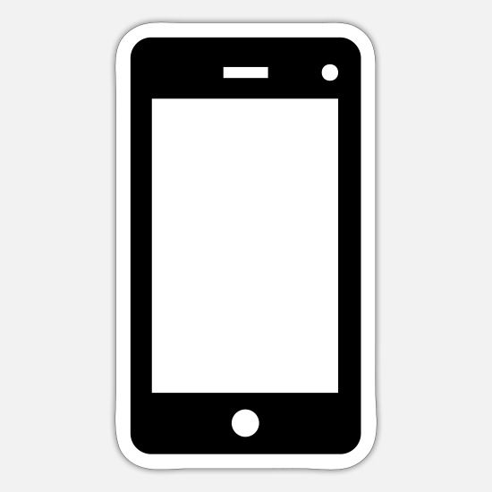

Mario Rossi
Web developer & Consulente SEO
Info personali
 Telefono: 06-10203040
Su di me:
"Sembra sempre impossibile, finchè non viene fatto." (Nelson Mandela Book)
Presentazione
Lavoro come sviluppatore Front End in qualità di libero professionista secondo il motto «"Fai della tua passione un lavoro e non lavorerai nemmeno per 1 giorno"». Collaboo per aziende pubbliche e private su progetti in fase di startup, sia come sviluppatore che come consulente SEO per partire con il piede giusto.
Formazione
Diploma scientifico
Conseguito nel 2010 con votazione 100/100 presso l'istituto Righi.
Master Web Developer
Conseguito nel 2016 presso Epicode School.
Ricnosciuto in via ufficiale per crediti formativi. Il certificato è stato rinnovato nel 2019 tramite nuovo esame.
Competenze
Conoscenze tecniche
Le conoscenze del mio bagaglio tecnico sono le seguenti:- <HTML>
- CSS
- Javascript/Typescript
- Angular
- SEO tecnica
Conoscenze operative
- Sviluppo web
- Dal PSD all'HTML, sviluppo di template per CMS
- Ottimizzazione CSS
- Pulizia di codice inusato, minify e verifica compativilità
- Ottimizzazione SEO
- Copywriting, ottimizzazioni tecniche on-site, ottimizzazioni off-site
Per stampare questa pagina premere i tasti Ctrl + P
oppure
Scarica il mio C.V.